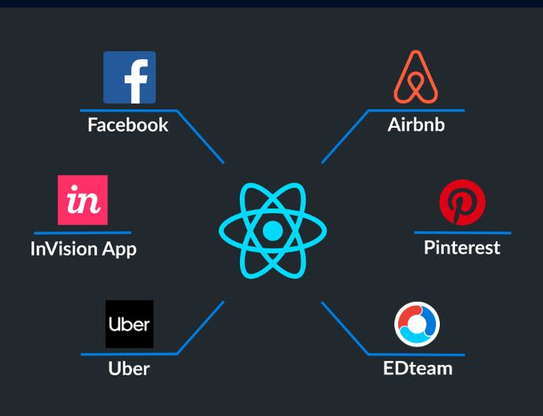
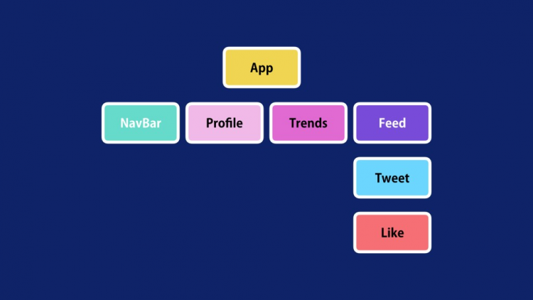

¿Que es React?
Es una librería open source de JavaScript para desarrollar interfaces de usuario. Fue lanzada en el año 2013 y desarrollada por Facebook, quienes también la mantienen actualmente junto a una comunidad de desarrolladores independientes y compañías.

Principales Caracteristicas
React tiene una plétora de características increíbles que siguen haciendo que sea una opción muy popular para los desarrolladores.
Estas son algunas de las características principales de React:
- JSX: Es una extensión de la sintaxis de JavaScript que amplía las características de ES6 (ECMAScript 2015). Nos permite combinar la lógica y el marcado de JavaScript en un componente
- DOM Virtual:Se trata de una copia del objeto DOM que primero actualiza y vuelve a renderizar nuestras páginas cuando se realizan cambios; luego compara el estado actual con el DOM original para mantenerlo sincronizado con los cambios. Esto hace que la renderización de las páginas sea más rápida.
- Componentes:Las aplicaciones React están formadas por diferentes componentes reutilizables que tienen su propia lógica e interfaz de usuario. Esto hace que sea eficiente para escalar aplicaciones y mantener un alto rendimiento porque no se duplica el código tan a menudo como en otros frameworks.
¿Quién utiliza React?
React ha sido utilizado por muchos ingenieros de front-end tanto en startups como en empresas establecidas como Facebook, Netflix, Instagram, Yahoo, Uber, The New York Times, y más.
Aunque todas las empresas mencionadas no construyeron todo su producto con React, algunas de sus páginas se construyeron con React. Esto se debe al alto rendimiento, la facilidad de uso y la escalabilidad de React.
React y su Arquitectura
El elemento más importante de React es el componente, que es, en esencia, una pieza de la interfaz de usuario. Como norma general, al diseñar una aplicación con React, lo que estamos haciendo es crear componentes independientes y reusables para, poco a poco, crear interfaces de usuario más complejas.
En ese sentido, React es similar a Angular, ya que toda aplicación en React tiene al menos un componente; al que normalmente nos referimos como componente «raíz», que contiene otros componentes “hijos”, y estos a su vez otros, etc. De esta manera, se puede afirmar que la vista es un árbol de componentes, como se muestra en el siguiente diagrama de ejemplo:
Pros y Contras de React
Puede que React sea una herramienta muy popular para construir nuestra interfaz de usuario, pero todavía hay razones por las que algunos desarrolladores o principiantes deciden no utilizarla.
Estas son algunas ventajas y desventajas a la hora de utilizar React:
Ventajas:
- React es fácil de aprender y entender.
- React tiene una comunidad muy activa en la que puedes contribuir y obtener ayuda cuando la necesites.
- Hay muchas oportunidades de trabajo para los desarrolladores de React.
- React ofrece un mayor rendimiento de las aplicaciones.
Desventajas
- Los principiantes que no tengan un conocimiento sólido de JavaScript (especialmente de ES6) pueden tener dificultades para entender React.
- React viene sin algunas funcionalidades comunes como la gestión de estado único y el enrutamiento; tendrías que instalar y aprender a usar bibliotecas externas para ellas.
Dónde Aprender Más
Debido a que hay muchas funcionalidades que tiene React a la hora construir aplicaciones.
El mejor lugar para empezar a explorar más sobre React es la documentación de React . También puedes consultar la documentación de la beta que se está reescribiendo con Hooks.